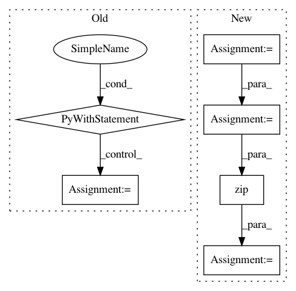

8da4857396fcedb1abd19a08cd4de40d16c7bc50,research/audioset/yamnet/yamnet_test.py,YAMNetTest,clip_test,#YAMNetTest#Any#Any#Any#,39
Before Change
def clip_test(self, waveform, expected_class_name, top_n=10):
Run the model on the waveform, check that expected class is in top-n.
with YAMNetTest._yamnet_graph.as_default():
prediction = np.mean(YAMNetTest._yamnet.predict(
np.reshape(waveform, [1, -1]), steps=1)[0], axis=0)
top_n_class_names = YAMNetTest._yamnet_classes[
np.argsort(prediction)[-top_n:]]
self.assertIn(expected_class_name, top_n_class_names)
def testZeros(self):
self.clip_test(
waveform=np.zeros((1, int(3 * params.SAMPLE_RATE))),
expected_class_name="Silence")
After Change
Run the model on the waveform, check that expected class is in top-n.
predictions, embeddings, log_mel_spectrogram = YAMNetTest._yamnet(waveform)
clip_predictions = np.mean(predictions, axis=0)
top_n_indices = np.argsort(clip_predictions)[-top_n:]
top_n_scores = clip_predictions[top_n_indices]
top_n_class_names = YAMNetTest._yamnet_classes[top_n_indices]
top_n_predictions = list(zip(top_n_class_names, top_n_scores))
self.assertIn(expected_class_name, top_n_class_names,
"Did not find expected class {} in top {} predictions: {}".format(
expected_class_name, top_n, top_n_predictions))
In pattern: SUPERPATTERN
Frequency: 3
Non-data size: 6
Instances
Project Name: tensorflow/models
Commit Name: 8da4857396fcedb1abd19a08cd4de40d16c7bc50
Time: 2020-08-17
Author: 30733558+plakal@users.noreply.github.com
File Name: research/audioset/yamnet/yamnet_test.py
Class Name: YAMNetTest
Method Name: clip_test
Project Name: pfnet/optuna
Commit Name: 665fc4749f4eceb9317633693f76644e1917fc87
Time: 2020-09-28
Author: ksuzuki19937.mm@gmail.com
File Name: tests/integration_tests/lightgbm_tuner_tests/test_optimize.py
Class Name: TestLightGBMTunerCV
Method Name: test_get_best_booster
Project Name: tensorflow/agents
Commit Name: 15355d6b1d45c157badd1c21157b529e817b7c3c
Time: 2019-03-08
Author: sfishman@google.com
File Name: tf_agents/agents/reinforce/reinforce_agent.py
Class Name: ReinforceAgent
Method Name: _train